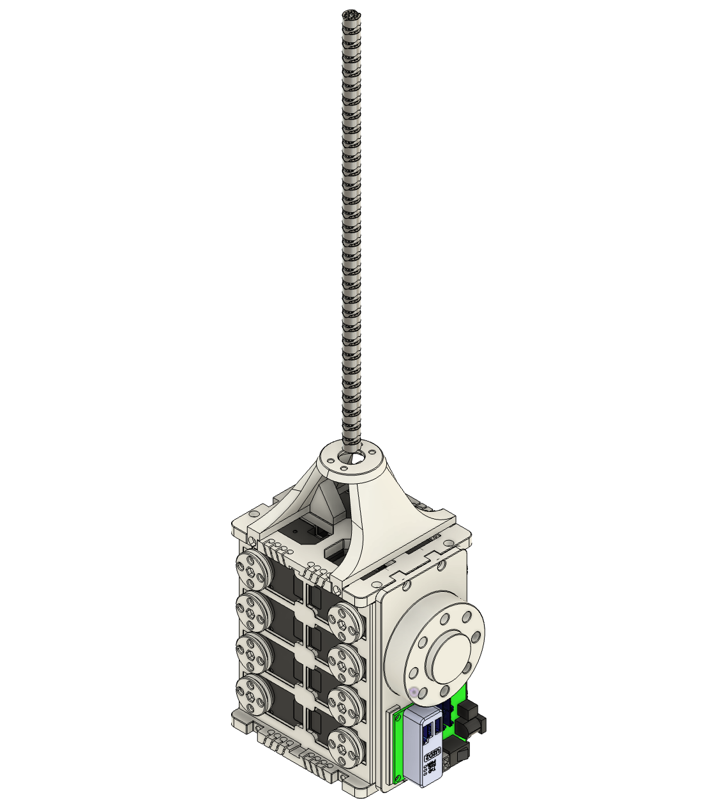

Input
Use a keyboard or joystick. Add other devices, such as haptic inputs, through an adapter.
Open-source hardware and teleoperation
for tendon-driven continuum robots.
Illustrative motion · Clarke coordinates in mm
Print the frame, mounts, and tendon spools.

Loading the assembly…
3D-printed parts + off-the-shelf servo motors
Use a keyboard or joystick. Add other devices, such as haptic inputs, through an adapter.
Illustrative control sequence
Acknowledgements: Chengnan Shentu, Kyum Lee, Puspita Triana Dewi, and Jessica Burgner-Kahrs (PI).